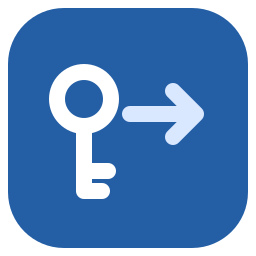

Skip to content

WinSshCopyId
Navigation
Commands
Accessibility
Close
This documentation workspace requires JavaScript for local navigation. Full Markdown articles remain available in the source repository.